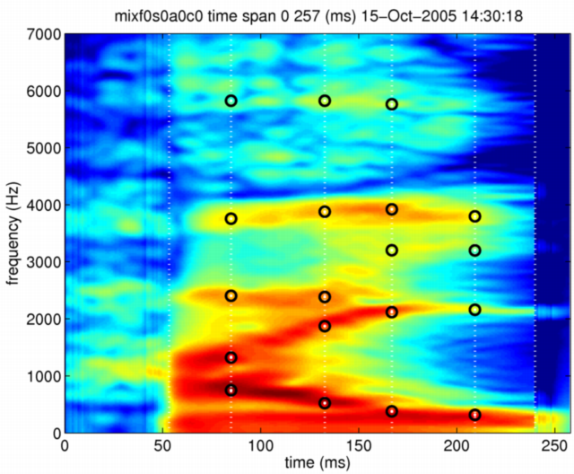
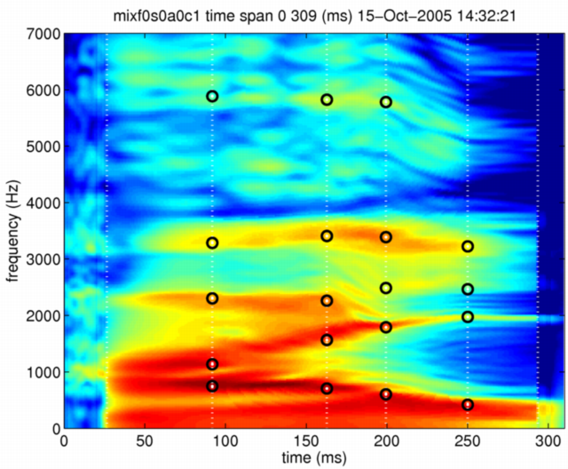
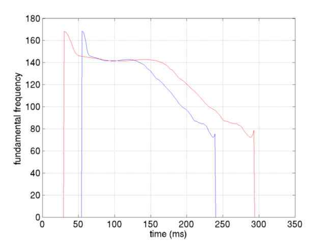
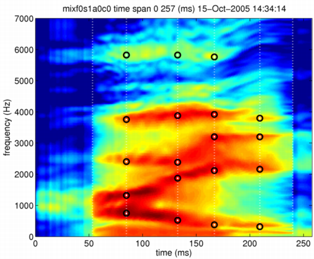

| | | Independent morphing rate control of synthesis parameters | Contents | Index |
This section introduces a new implementation of independent morphing parameter control which was reported at Eurospeech2003[3]. This new implementation fixes deficiencies due to the poor organization of the previous one which made additional experiments using the version impossibly difficult to conduct. What the user has to do is simply to set each morphing rate for each synthesis parameter to each field of a structured morphing variable. The morphing function is the same to the function used in the previous sections.
The following function generates the morphing object mObject3 out from morphing objects mObject1 and mObject2. The structured variable mRate sets morphing rates for the fields of mObject1 and mObject2. The method indicator mixMethod defines method of spectral parameter mixing. The current implementation allows logarithmic (log) or linear lin).
mObject3 = timeFrequencySTRAIGHTmorphing(mObject1,mObject2,mRate,mixMethod);
The morphing rate for a specific synthesis parameter can be set to the field of the structured variable mRate that is corresponding to the parameter. The behavior of the morphing function is the same to the usual morphing when a scalar value was set to the variable mRate. The output mObject3 is identical to the input mObject1 when mRate = 0. The output mObject3 is identical to the input mObject2 when mRate = 1.
mixRate.F0 (fundamental frequency) mixRate.spectrum (spectrogram [level]) mixRate.aperiodicity (aperiodicity index) mixRate.coordinate (time-frequency coordinate)
For the very beginning, let's set morphing rates for every parameters to zero. The morphing objects are the same samples of Japanese 'hai' (yes in English).
mRate.F0 =0; mRate.spectrum=0; mRate.aperiodicity=0; mRate.coordinate=0; mixf0s0a0c0 = timeFrequencySTRAIGHTmorphing(neutralHai,angryHai,mRate,'log');
The generated morphing object using this morphing rate has exactly the same parameters as the morphing object of neutral speech in this case.

The following command yields the synthesized speech from the morphing object generated from the command shown above.
symixf0s0a0c1 = executeSTRAIGHTsynthesisM(mixf0s0a0c1);
The generated synthesized speech sounds close to the original neutral speech.
The next example illustrates how partial morphing works. Only the time-frequency coordinate system is morphed by setting the 'coordinate' field to one while setting the other fields to zero. This manipulation only deforms the shape of the spectrographic representation while keeping intensity (colors) the same. This is the consequence of coordinate only morphing.

This partial morphing on the time-frequency coordinate also deforms the fundamental frequency trajectory. The following figure shows fundamental frequency trajectories of the original neutral speech (blue line) and the partially morphed trajectory (red line). the deformed

Speech synthesis using this morphing object is done using exactly the same procedure given before.
The final example illustrates the spectral level morphing. Please note that it is virtually the target (the second argument) spectrogram that is deformed to match the original (reference: the first argument) time-fequency coordinate system.

The following sounds are generated using this partial morphing procedure.
| | | Independent morphing rate control of synthesis parameters | Contents | Index |